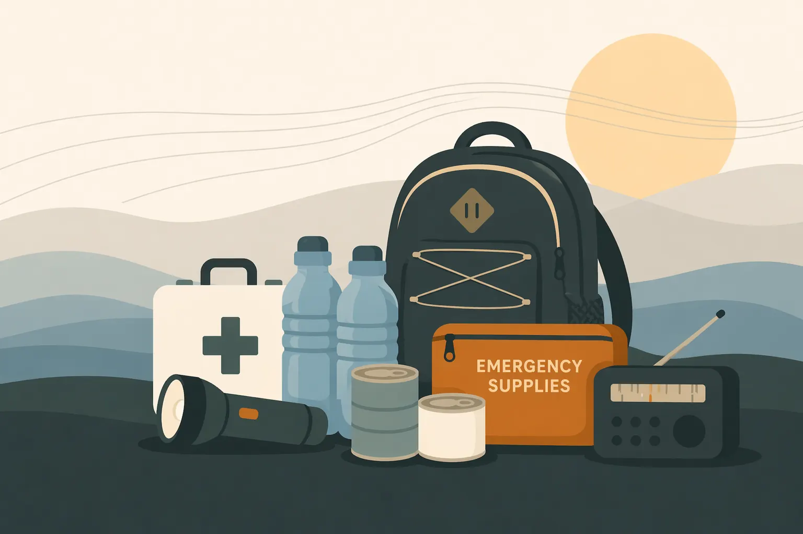
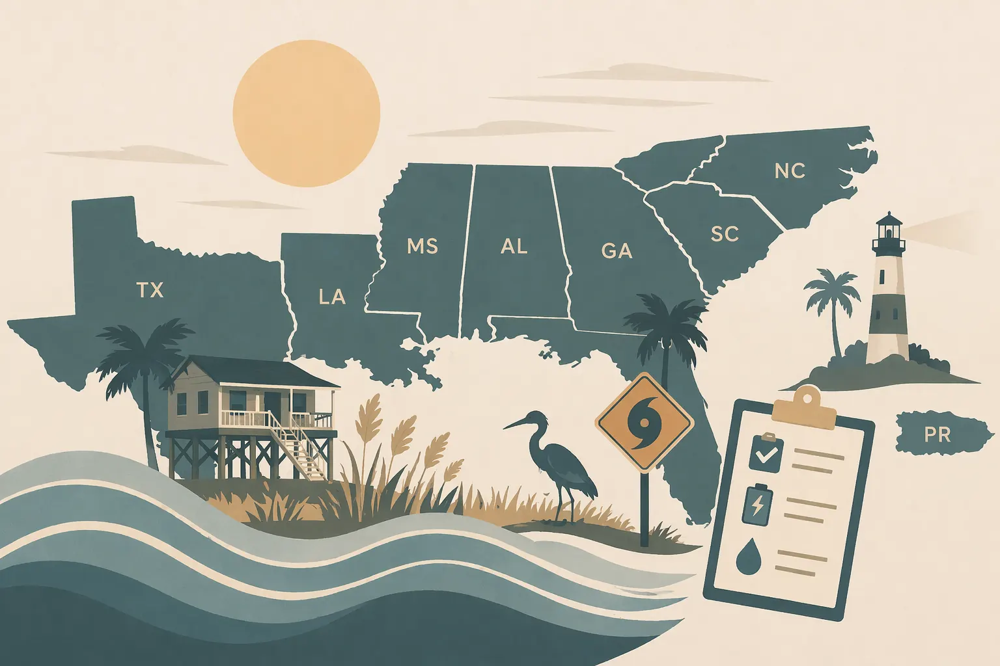

Guías de kits
La biblioteca principal de preparación. Cada kit incluye la guía completa más su lista de verificación imprimible.
Si vive en la costa del Golfo o del Atlántico, la temporada de huracanes es parte de su calendario. Este sitio cubre la preparación: qué empacar, qué entender y por dónde empezar.
Guías costeras
Actualización de la temporada 2026
Actualizado el 18 de junio: el pronóstico atlántico de NOAA del 21 de mayo indica una probabilidad del 55% de una temporada por debajo de lo normal, con 8-14 tormentas con nombre, 3-6 huracanes y 1-3 huracanes mayores dentro del rango previsto. NOAA también deja claro el punto clave para la planificación: el pronóstico estacional no es un pronóstico de impacto local, y una sola tormenta puede hacer que la temporada sea seria para un hogar o una comunidad específica.
Use esta revisión en plena temporada para reemplazar agua vencida, pilas, medicamentos, suministros para mascotas y copias de documentos; confirmar su zona de evacuación y sus alertas locales; y guardar el pronóstico de NOAA y el National Hurricane Center antes de que una tormenta con nombre cambie la disponibilidad de suministros.
Se trata de cuidado. Usted se prepara porque tiene personas, mascotas, medicamentos, documentos y rutinas que vale la pena proteger. Un kit para huracanes no es una compra de pánico. Es un conjunto de decisiones tomadas con suficiente anticipación para que el toque de tierra no las tome por usted.
La mayor parte del contenido sobre huracanes es aterrador o inútil. Listas de verificación federales con toda la calidez de un aviso legal. Recopilaciones de afiliados donde cada recomendación genera una comisión. Este sitio no es ninguno de los dos: orientación en lenguaje sencillo para hogares de la costa del Golfo y del Atlántico, escrita por alguien que realmente lo pensó bien.
Sin anuncios. Sin enlaces de afiliados. Solo orientación específica, listas de verificación imprimibles y páginas por estado que puede enviarle a alguien antes de que haya una tormenta en el mapa.
Dos formas de entrar: comience con la guía costera de su estado si primero quiere entender su riesgo local, o vaya directamente a la biblioteca de kits si solo necesita una lista.

La biblioteca principal de preparación. Cada kit incluye la guía completa más su lista de verificación imprimible.

Use la geografía primero: riesgo local, adiciones regionales al kit y las fuentes oficiales que debe guardar antes de la temporada.
Apoyar este sitio
Sin anuncios. Sin enlaces de afiliados. Si esto hizo más clara su preparación ante huracanes, puede ayudar a mantener el sitio gratuito y actualizado.
Nota editorial
Esta página fue escrita y revisada por Michael Hendrick el 18 de junio de 2026. HurricaneSupplyList.com es un proyecto independiente de preparación, sin anuncios ni enlaces de afiliados.
La orientación se contrasta con Ready.gov, el National Hurricane Center, el National Weather Service, FEMA y las oficinas estatales o locales de manejo de emergencias enlazadas en la página.
Use esta guía para prepararse con anticipación. Cuando las autoridades locales emitan órdenes de evacuación, instrucciones de refugio, alertas meteorológicas o orientación médica, siga primero esas fuentes oficiales.